1.git config --global user.name abc..
2.git config --global user.email example@mail.com
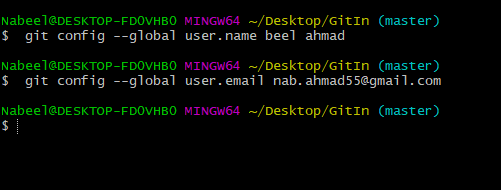
1.git config --global user.name
2.git config --global user.email
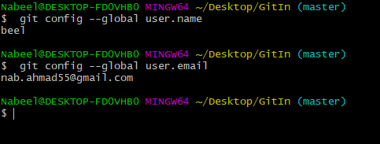
$ git init
RESULT:
Initialized empty Git repository in
C:/Users/zee/Desktop/git in one video cwh/.git
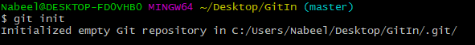
ls -lart
print the list of all folder including hidden folders
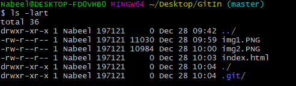
$ git status
RESULT:
On branch master
No commits yet
Untracked files:
(use "git add
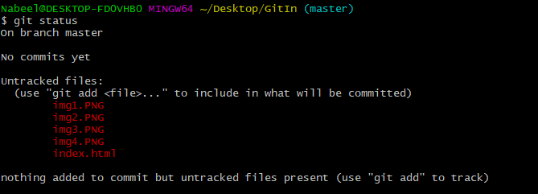
1.git add "git commands and notes.txt"
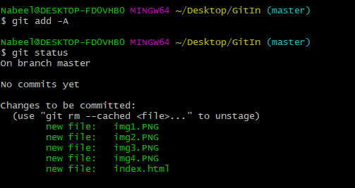
git commit
RESULT:
Vim editor will be opened
1: press i to INSERT
2: Write the commit notes ("Initial Commit")
3: Press 'ESC' and now type ':wq' and press Enter
4: Now run 'git status' command
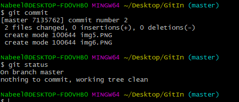
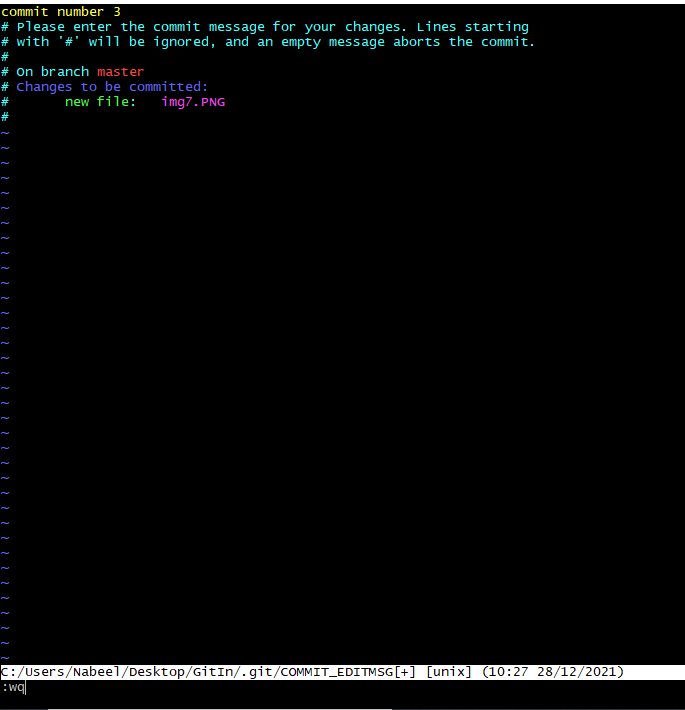
git add -A
1. Now if you check the status you will see that files are now
in staged area and now you can commit the files to shift them
in unmodified phase.
2 Note: if you edit a already have a file in unmodified phase
and edit it then it is now in modified phase and not you will
have to shift to staged and then commit phase to take it back
to the unmodified phase.
It will commit the changes without opening the vim editor
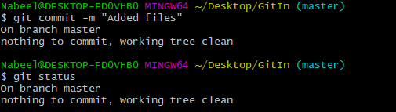
1.git checkout Filename
2.git checkout -f (To checkout all files at once)
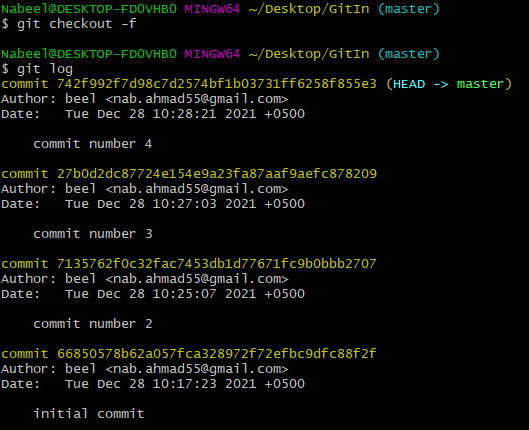
git log //show all the commits
(press q to exit from git log)
git log -p -5 note: // show last 5(or any number you write) commits and also show the changes that were made
It will commit the changes without opening the vim editor
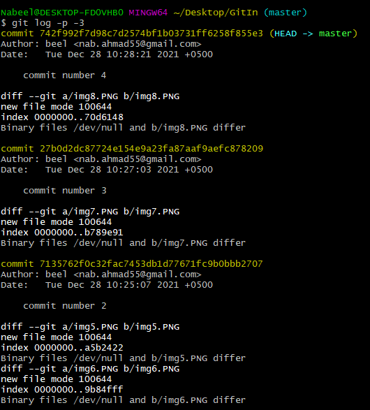
git diff
git diff --staged // compared staged stage with last commit
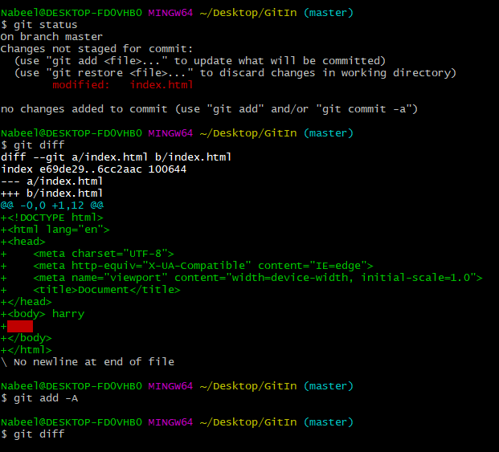
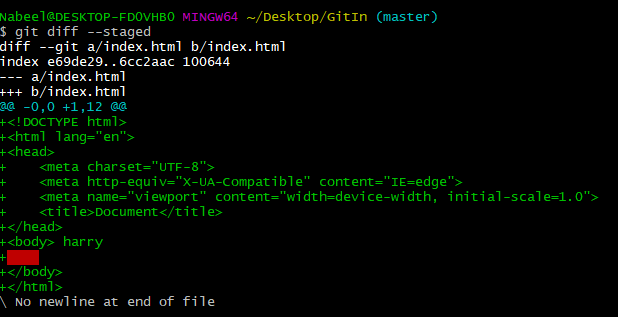